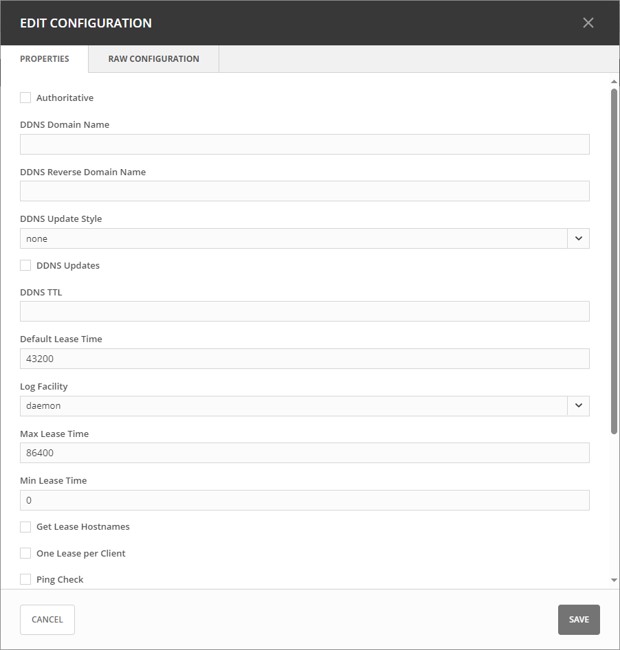

ISC DHCP
Note
To manage ISC DHCP servers in the Management console, see ISC DHCP (Management Console, obsolete).
Defining Options on ISC DHCP Servers
On the Admin page, select Service Management in the upper-left corner.
Under DHCP Services in the filtering sidebar, select ISC DHCP, and then the applicable DHCP server.
On the Action or the Row … menu, select either Manage DHCPv4 options or Managem DHCPv6 options.
The Manage DHCP Options dialog box opens, showing all custom options defined on the DHCP server.
Use the :guilabel:`Add an option dropdown menu to select the ISC DHCP option you want to define.
To delete an option, hover over its field, and theb click the trash can icon next to it.
Click Save to save the changed option definitions.
Defining Custom DHCP Options
Go to the Custom Options tab.
Select the appropriate Vendor class in the drop-down list.
Adding a New Custom Option
Select Add Custom Option.
Enter the desired ID. An error will show if that ID is not available or invalid.
Enter a name.
Select a Type in the dropdown list. Select the Array checkbox if the option is an Array.
Click Add, and then Save.
Note
Once an option has been defined, you can set its value on the Edit Options tab.
Editing an Existing Cusotom Option
On the Custom Options tab in the Manage DHCP Options dialog box, select the relevant custom option.
On the Row … menu, select Edit.
Edit the ID, and then click Save.
Removing an Existing Custom Option
On the Custom Options tab in the Manage DHCP Options dialog box, select the relevant custom option.
On the Row … menu, select Remove, and then Yes to confirm.
ISC Server Properties
You can edit the configuration of ISC DHCP servers to suit your requirements.
Select the relevant server.
Select Edit configuration on either the Action or the Row … menu.
In the Edit Configuration dialog box, make the desired changes, and then click Save.

Authoritative: Determines whether the server has the authority to validate DHCP requests from clients.
DDNS Domain Name: Specifies the DNS domain name used to store the A record for DHCP clients.
DDNS Reverse Domain Name: Specifies the DNS reverse domain name for storing the PTR record of DHCP clients.
DDNS Update Style: Determines the method used by the DHCP server to perform DNS updates. Options include:
None: No dynamic DNS updates are performed.
Ad-hoc (deprecated): This update scheme is outdated.
Interim: Recommended method for dynamic DNS updates.
DDNS Updates: Enables or disables DNS updates. This setting is only effective if DNS updates are globally enabled with the DDNS Update Style setting.
DDNS TTL: Sets the Time To Live (TTL) value, in seconds, for DNS updates.
Default Lease Time: Specifies the default lease duration, in seconds, for DHCP leases.
Log Facility: Selects the syslog facility for logging DHCP server messages. Note that not all facilities may be available on all systems.
Max/Min Lease Time: Sets the maximum and minimum lease durations, in seconds, for DHCP leases.
Get Lease Hostnames: Specifies whether the DHCP server should perform a reverse DNS lookup for each address assigned to a client and send the result to the client as the hostname option.
One Lease per Client: Controls whether existing leases held by a client should be released when requesting a new lease.
Ping Check: Specifies whether the DHCP server should send an ICMP echo message to probe an IP Address before offering it to a DHCP client.
Ping Timeout: Specifies for how many seconds the DHCP server should wait for an ICMP echo response when Ping Check is active.
Filename: Specifies the name of the initial boot file to be used by a client.
Server Name: Specifies the name of the server from which the client should load its boot file.
Next Server: Specifies the host address of the server from which the initial boot file (specified by Filename) is to be loaded.
{kind=link}
Configuring Dynamic Updates for ISC DHCP Server
You can configure the ISC DHCP Server to update zones on Micetro appliances or BIND servers with dynamic updates using raw config editing.
To configure a ISC DHCP server to update zones dynamically:
Go to the Raw Configuration tab in the Edit Configuration dialog box.
In the raw configuration editor, add the following statements:
key update-key { algorithm hmac-sha512; secret "5B1..."; } zone micetro.com { primary 1.2.3.4; key update-key; }
- Ensure that:
The key is not surronded by double quotes.
Each line contains only one declaration.
Note
It’s crucial to maintain the format of the zone and key statements as documented. Failure to adhere to this format may lead to issues with dynamic updates.